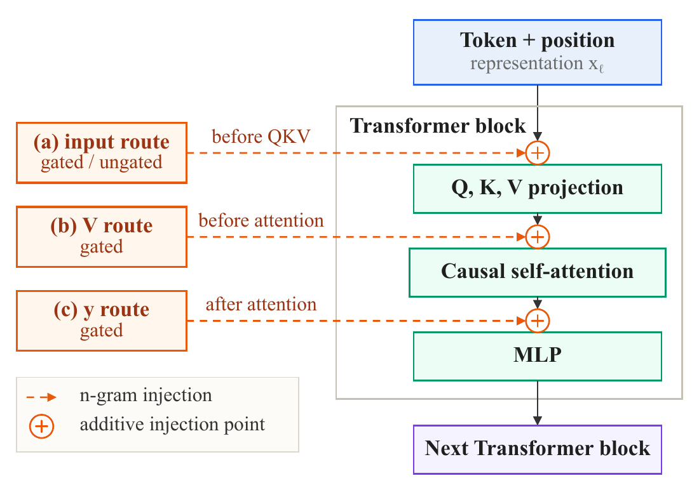
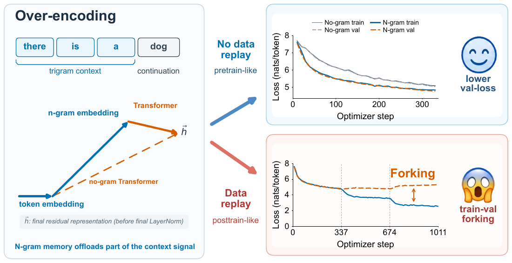
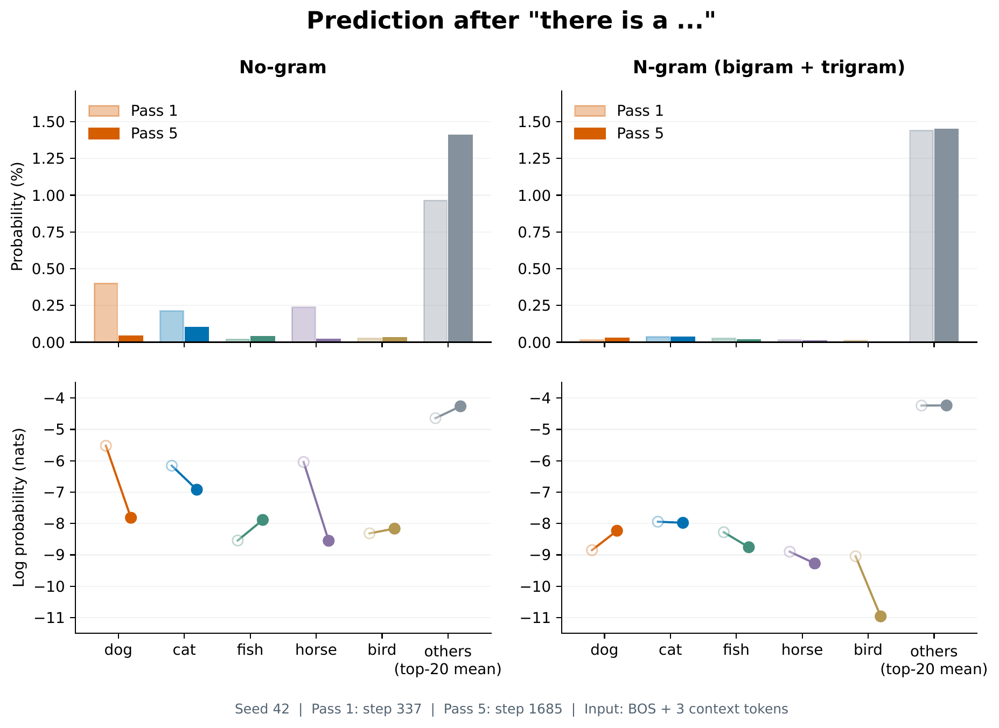
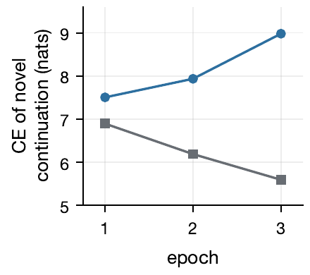
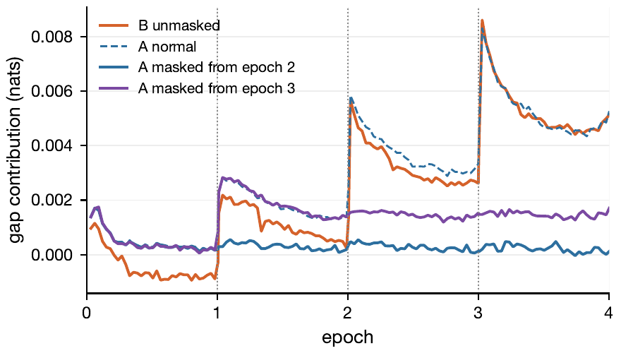
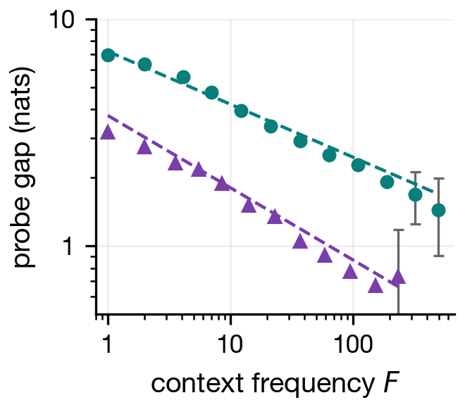
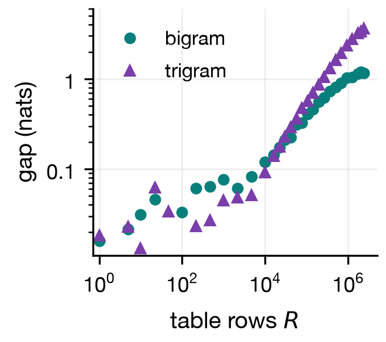
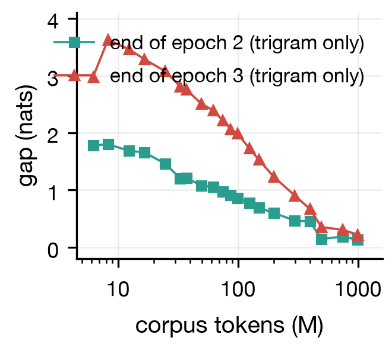
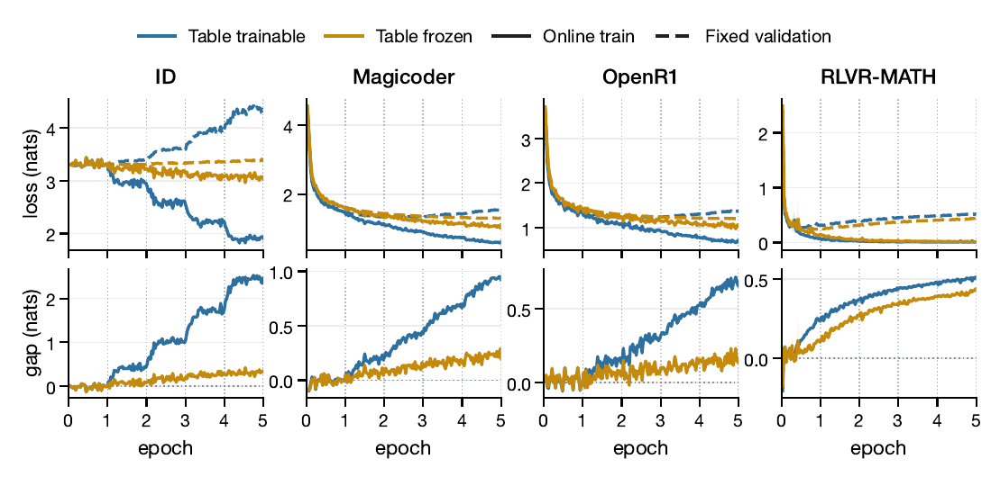

<!doctype html>
<html lang="zh-CN">
<head>
<meta charset="utf-8">
<meta name="viewport" content="width=device-width, initial-scale=1">
<title>Forking：over-encoding 遇上多 epoch 训练时的突然过拟合</title>
<!--
  report-to-human panel template v2
  Palette and type: Anthropic brand-guidelines (github.com/anthropics/skills, skills/brand-guidelines).
  Rules: keep only what the reader needs. No subtitle, no KPI cards, no section numbers, no status banners.
  Every term is explained in plain words where it first appears.
-->
<style>
  :root {
    --dark: #141413;   /* primary text */
    --light: #faf9f5;  /* page background */
    --mid: #b0aea5;    /* borders, axes */
    --soft: #e8e6dc;   /* subtle fills */
    --muted: #5e5d59;  /* secondary text (darker than --mid for contrast) */
    --orange: #d97757; /* primary accent: the main result */
    --blue: #6a9bcc;   /* secondary accent */
    --green: #788c5d;  /* tertiary accent */
    --head: "Poppins", "PingFang SC", "Noto Sans CJK SC", "Hiragino Sans GB", Arial, sans-serif;
    --body: "Lora", "Noto Serif CJK SC", "Songti SC", Georgia, serif;
    --mono: "SF Mono", Menlo, Consolas, monospace;
  }
  * { box-sizing: border-box; }
  body { margin: 0; background: var(--light); color: var(--dark); font: 17px/1.8 var(--body); }
  main { max-width: 760px; margin: 0 auto; padding: 72px 24px 96px; }
  h1, h2, h3 { font-family: var(--head); font-weight: 600; line-height: 1.35; letter-spacing: -0.01em; }
  h1 { font-size: 32px; margin: 0 0 16px; }
  h2 { font-size: 22px; margin: 64px 0 12px; }
  p { margin: 0 0 16px; }
  .lede { font-size: 19px; }
  a { color: inherit; text-decoration: underline; text-decoration-color: var(--orange); text-underline-offset: 3px; }
  code, .id { font-family: var(--mono); font-size: 0.86em; background: var(--soft); padding: 1px 5px; border-radius: 4px; }

  /* L2 settings row: monochrome line icons + label, never color emoji */
  .settings { display: flex; flex-wrap: wrap; gap: 8px 20px; list-style: none; padding: 0; margin: 24px 0 0;
              font: 14px/1.6 var(--head); color: var(--muted); }
  .settings li { display: inline-flex; align-items: center; gap: 6px; }
  .settings svg { width: 15px; height: 15px; stroke: var(--dark); fill: none; stroke-width: 1.6;
                  stroke-linecap: round; stroke-linejoin: round; }
  .settings b { color: var(--dark); font-weight: 500; }

  figure { margin: 28px 0; padding: 20px; background: #fff; border: 1px solid var(--soft); border-radius: 10px; }
  figure img, figure svg.chart { display: block; width: 100%; height: auto; }
  figcaption { margin-top: 12px; font: 14px/1.6 var(--head); color: var(--muted); }
  .legend { display: flex; gap: 18px; font: 13px var(--head); color: var(--muted); margin-bottom: 8px; }
  .legend i { display: inline-block; width: 14px; height: 2px; vertical-align: middle; margin-right: 6px; }

  .warn { border-left: 3px solid var(--orange); padding: 4px 0 4px 16px; margin: 24px 0; }
  .warn strong { font-family: var(--head); }

  /* sample browser: compare outputs side by side */
  .tabs { display: flex; gap: 4px; border-bottom: 1px solid var(--soft); margin-bottom: 12px; }
  .tabs button { font: 14px var(--head); background: none; border: 0; padding: 8px 12px; cursor: pointer;
                 color: var(--muted); border-bottom: 2px solid transparent; }
  .tabs button[aria-selected="true"] { color: var(--dark); border-bottom-color: var(--orange); }
  .sample { display: none; white-space: pre-wrap; font: 14px/1.7 var(--mono); }
  .sample.on { display: block; }

  details { margin: 16px 0; }
  summary { cursor: pointer; font: 15px var(--head); color: var(--muted); }
  table { width: 100%; border-collapse: collapse; font: 14px/1.6 var(--head); margin: 16px 0; }
  th, td { text-align: left; padding: 8px 10px; border-bottom: 1px solid var(--soft); }
  th { font-weight: 500; color: var(--muted); }
  footer { margin-top: 80px; font: 13px var(--head); color: var(--mid); }
</head>
<body>
<main>

<h1>Forking：over-encoding 遇上多 epoch 训练时的突然过拟合</h1>
<p class="lede">十月下旬我在 Clubhouse 讲了我们的工作 Forking（arXiv:2610.00394）。这篇是演讲内容的中文整理，配论文原图：over-encoding 是什么，为什么重复训练同一批数据会让 loss 曲线分叉，我们提出的解释模型和干预实验，三条经验规律，以及对大模型训练的实际建议。</p>
<ul class="settings">
  <li><svg viewBox="0 0 24 24"><path d="M4 19.5A2.5 2.5 0 0 1 6.5 17H20"/><path d="M6.5 2H20v20H6.5A2.5 2.5 0 0 1 4 19.5v-15A2.5 2.5 0 0 1 6.5 2z"/></svg>论文 <b><a href="https://arxiv.org/abs/2610.00394">Forking: Sudden Overfitting Under Replay</a></b></li>
  <li><svg viewBox="0 0 24 24"><path d="M12 1a3 3 0 0 0-3 3v8a3 3 0 0 0 6 0V4a3 3 0 0 0-3-3z"/><path d="M19 10v2a7 7 0 0 1-14 0v-2"/><path d="M12 19v4"/></svg>场合 <b>Clubhouse 30 分钟演讲 + 问答</b></li>
  <li><svg viewBox="0 0 24 24"><rect x="3" y="5" width="18" height="16" rx="2"/><path d="M3 10h18M8 3v4M16 3v4"/></svg><b>2026-10-29</b></li>
</ul>
<p class="langbar">English version: <a href="forking-talk-20261029-en.html">Forking: Sudden Overfitting When Over-Encoding Meets Replay</a></p>

<h2>over-encoding：给 token 组合再加一份学到的表示</h2>
<p>标准语言模型有一张 token embedding 表，把每个 token 映射成一个向量，之后每个 Transformer block 在它上面加 residual。over-encoding 模块做的事很简单：给 token 的组合再加一份学到的表示，也就是 n-gram。</p>
<p>举个例子。把每个词当作一个 token，考虑 "there is a dog"："there is a" 是上文，模型要预测的是 "dog"。仅仅凭这个三词上文，我们至少已经知道下一件事：下一个 token 应该是个名词。两个 token 的上文叫 bigram，三个的叫 trigram，DeepSeek 的 Engram 用到了 5-gram 的表。</p>
<p>n-gram 模块拿上文当 key，从一张查找表里取出一个学到的向量，喂给 Transformer——具体加在哪，有几种选择。</p>
<figure><figcaption>n-gram 向量进入 Transformer block 的三个候选注入点：QKV 投影之前、注意力之前、注意力之后，都是加性注入。论文的主设定是加到残差流上。</figcaption></figure>
<p>这件事吸引人的地方在于便宜：查表比跑一个大的稠密网络省得多，而且可以只用 CPU 完成，表可以放在 host memory 里，甚至放在 SSD 上。所以这看起来是一条新的 scaling 轴——关于 memory 的 scaling。</p>
<p>我们的论文不是在论证 over-encoding 不行。它确实有效，能改善预测、提供有用的额外容量。我们想指出的是它和多 epoch 训练结合时的一个 failure mode：在研究常用的模型规模上它非常常见；数据量很大时它会变得不明显；但生产级的大量数据一旦碰上多 epoch 训练，问题还是会回来。</p>

<h2>现象：第二个 epoch 开始，训练 loss 阶梯式下降，验证 loss 掉头向上</h2>
<p>我们是在 nanoGPT speedrun 里发现这个现象的。给架构加上 n-gram 模块，在多 epoch 数据集上训练，并用不带这个模块的同一 backbone 做对照：第二个 epoch 一开始，训练损失像阶梯一样下降，验证损失分叉向上，像一个叉子——所以我们叫它 forking。第三个 epoch，阶梯反复出现，gap 变得更大。</p>
<figure><figcaption>左：over-encoding 示意——"there is a" 这个三词上文的记忆向量被加进残差流。右上：不重放数据时，训练与验证损失一起下降，n-gram 模型验证损失更低。右下：一旦重放，训练损失阶梯式下降、验证损失分叉向上——forking。</figcaption></figure>
<p>这听起来就是普通过拟合。但通常 LLM 不会过拟合：数据太大，自然语言的规律太复杂，LLM 一般处在 underfitting 的区域。现在极大的 MoE 上也开始看到过拟合，over-encoding 类似，只是看起来更猛烈。</p>

<h2>解释模型：每个 context 都是一个独立的小预测问题</h2>
<p>想象 "there is a" 在一个小训练样本里只出现两次，两次后面都是 "dog"。而真实世界里 dog 和 cat 可能各占一半，只是这个小样本恰好没有 cat。模型在别处见过很多次 "cat"，但从没见过 "cat" 跟在这个短语后面。</p>
<p>现在开始重放这两条样本。每一遍训练都在奖励模型预测 "dog"，分给 "dog" 的概率越来越多，留给 "cat" 的越来越少。于是碰到新样本 "there is a cat" 时模型反而变差了，尽管训练损失还在降。关键点：重复同样的样本不提供任何新证据——模型变得更自信，但没有变得更有知识。</p>
<figure><figcaption>"there is a …" 之后各续写的概率，第一遍 vs 第五遍。左：无 n-gram 记忆的模型，重放后 dog 的概率下降。右：带 n-gram 记忆的模型，dog 上升，而 bird 这类没见过的续写概率大跌。同样的重放，两种模型的行为相反。</figcaption></figure>
<p>n-gram memory 让这件事更尖锐：每个 context 有自己的查找向量，相当于一个几乎独立的小预测问题。训练其他样本时，这个小洞基本不会被填上。把 seen 和 unseen 的续写分开统计，挤压直接可见：未见续写的损失随重放一路上升。</p>
<figure><figcaption>n-gram 模型上，未见续写的交叉熵随 epoch 上升（蓝），已见续写继续下降（灰）——挤压在持续发生。</figcaption></figure>

<h2>干预实验：mask 掉一部分 context，只有它们停止分叉</h2>
<p>解释不能只靠讲故事。我们做了一个干预：训练中途把一部分 context 的 memory 检索 mask 掉，其余照常。结果被 mask 的 context 的 gap 基本停止增长，没被 mask 的继续扩大。改变机制的一个部件、只有对应部分的行为改变——这是我们相信这个解释的主要原因。</p>
<figure><figcaption>掩码干预：从第 2 / 第 3 个 epoch 起被 mask 掉 memory 检索的那组 context，其 gap 贡献停止增长（蓝、紫），未 mask 的（橙）继续扩大。</figcaption></figure>

<h2>三条规律：频率、表大小、语料大小</h2>
<p>我们做了三组实验，得到三条规律。第一，context 出现频率越低，gap 越大，而且近似服从幂律：早期实验里 bigram 约 0.25、trigram 约 0.33。第二，n-gram 表越大，gap 越大——表小的时候不同 context 叠在同一个条目上，等效于每个向量被更多样本访问。第三，语料越大，gap 越小——rare context 变少了。</p>
<figure><figcaption>gap 随 context 频率升高而下降，近似幂律（对数坐标下接近直线）。</figcaption></figure>
<figure><figcaption>n-gram 表越大，gap 越大。</figcaption></figure>
<figure><figcaption>每个 epoch 的语料越大，gap 越小。</figcaption></figure>
<p>最难解释的是那条幂律。如果是最普通的有限样本过拟合，指数应该是 -0.5，但我们测到的明显更平。我先猜是训练动力学导致的，后来猜是自然语言的分布导致的——最后是后者。线索来自 Good-Turing：一个 n-gram 上文被采样 f 次之后，下一个 token 仍然 unseen 的概率正比于 f 的负 alpha 次幂，而这个 alpha 和我们测到的指数对得上。顺着这条线索，我们才意识到应该把 unseen continuation 单独拆出来看：在 context 自己的子空间里，seen token 挤压 unseen token 的概率——这就是重放把 gap 越推越大的机制。</p>

<h2>实用建议：冻结表，少重复，单 epoch 也要测 trained/untrained gap</h2>
<p>给实际训练的建议有几条。SFT 和 RL 阶段应该冻结 over-encoding 表；但即使冻结也会有少量 forking，因为 context 专属的子空间已经分离出来了，backbone 还能继续利用它们。SFT 数据里不要让相似 pattern 重复太多次——样本多不等于多样性高。</p>
<figure><figcaption>四个后训练数据上，表可训练（蓝）vs 表冻结（黄）：冻结显著压住分叉，但 gap 仍缓慢增长——冻结是缓解，不是消除。</figcaption></figure>
<p>更重要的是：即使你只做单 epoch 训练，也应该稍微关注 forking。单 epoch 下其实有两个训练 loss：一个是已见 token 上的 loss，一个是 online loss——每个新 batch 里的新 token 上的 loss，它严格等于验证 loss（这也是第一轮 epoch 的预训练不需要另加同分布验证集的原因）。所以损害不会以分叉的形式显形，你看到的可能只是 loss 下降得不如预期快。一个便宜的检查：训练结束时，固定一个训练过的集合测它的 loss，和没训过的 token 对比——如果彻底解决 forking，曲线应该降得更快一些。</p>

<h2>生产规模：没被汇报，不等于不存在</h2>
<p>目前 DeepSeek V4.1 和 Qwen3.8 Flash Next 的公开报告都没有提到这个现象。我猜有两个原因：一是不冻结表的训练阶段基本只做单 epoch；二是表还远没有 scale 到边界——Engram 的作者自己也说还能继续 scale，而且确实在继续：V4.1 Flash 十月版本的 n-gram 表比九月版本大了不少，参数从约 150B 扩到约 250B。我们正在做实验，看 DeepSeek 这个量级的模型，表 scale 到多大才会撞上这个问题。</p>
<p>另外要注意，真实预训练里有些专项数据是会被重复的，那些地方就会触发。据我了解，一些基模团队在生产规模的实验里其实也见过这个 failure mode，只是它被总体平均值稀释，单看聚合曲线看不出来。已经有公司在找我合作解决这个问题。</p>

<h2>我想做的：science of AI</h2>
<p>最后说点更大的。我的志向是建立 AI 的科学（我称之为 SAI）：结论之间有明确的推导关系。它首先是一套证据标准。我在小红书上的名字是 "Be Critical"——我经常觉得论文的结论超出了实验能支撑的范围，或者结论成立的条件没说清楚：我们知道发生了什么，但不知道为什么发生、什么时候会再次发生。</p>
<p>我不认为一切都要从纯数学导出——那样我们只能计算多层线性网络。我相信 Anderson 说的 more is different：复杂现象无法用纯数学描述，但中间层次会涌现出可解耦、可用的定律，比如理想气体定律，比如牛顿定律——你不需要计算每一个原子。我们可以建立中间层次的第一性原理：系统整体量之间的关系，可以隔离、可以分别研究、可以连接起来做新预测。</p>
<p>一个简单的图景：假设能严格导出 A = B + C，其中 C 算不出来但可以测量。如果在我们关心的条件范围内 C 一直足够小，那么 A 近似等于 B——这是一个有用的结论：有显式的近似、可测的误差、验证过的适用范围。但还有第二个要求：受控地改变 B，检查 A 是否如预测般响应。只在一个实验里发现 A 和 B 碰巧相等是不够的——关系要能支撑干预下的预测，这才是因果的部分。</p>
<p>研究和这个标准是一个循环：实验给出现象，解释建议新实验，新实验划定解释的边界。Forking 就是这个方法论的一个例子——一个在小算力上就能研究清楚的问题：现象、解释模型、干预检验、三条规律，然后回到生产规模的 scaling 问题。算力有限反而让"选对问题和对照"变得更重要。</p>

<h2>致谢与演讲材料</h2>
<p>这个现象由 Danni Yu 发现，Shanbin Yu 最先研究，我中途加入，搭出了解释模型——这是我自豪的部分。工作由 Ziming Liu 的研究公司 MetaCircle 资助，我即将在 LiuLab 开始博士。</p>
<p>演讲的全部材料公开在这里：英文逐字读稿 <a href="forking-talk-script-20261029.pdf">Forking_English_30min_Script（PDF）</a>，含每节的时间检查点和 speaker notes；演讲问答逐字稿 <a href="forking-talk-qa-20261029.pdf">Q&amp;A Reading Script（PDF）</a>，十三个问题与我的计划回答。论文见 <a href="https://arxiv.org/abs/2610.00394">arXiv:2610.00394</a>，over-encoding 的背景见 Engram 论文 <a href="https://arxiv.org/abs/2601.07372">arXiv:2601.07372</a>。</p>

</main>
</body>
</html>
